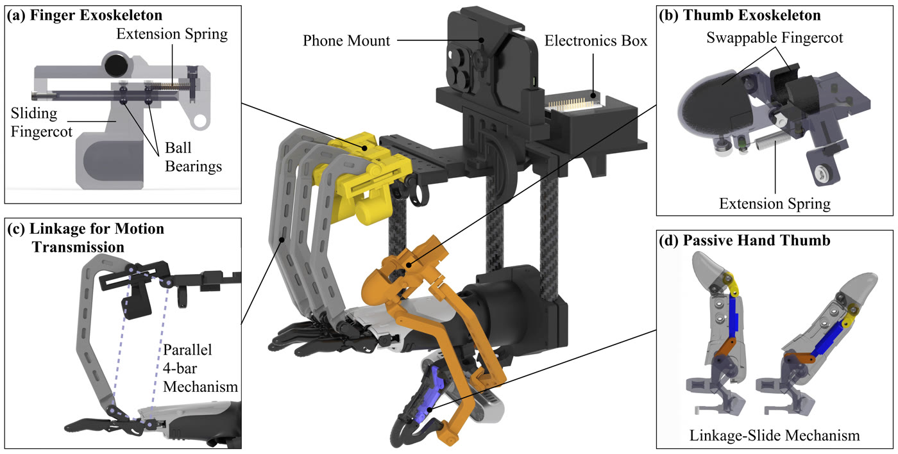
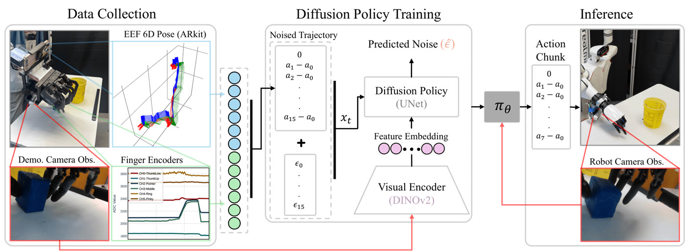

Robotic hands · Dec 2025 – Mar 2026
DexEXO
A wearable dexterous exoskeleton that connects natural hand demonstrations with robot learning.
Overview
DexEXO is a wearability-first hand exoskeleton for collecting demonstrations across different operators. It aligns the demonstration interface and robot at the hardware level, connecting visual appearance, contact geometry, and kinematics.
A slider-based finger interface and pose-tolerant thumb mechanism accommodate different hand sizes. A passive hand matches the deployed robot, allowing learning from wrist-camera observations with less visual processing.
Wearability through mechanism design
The hardware combines a linkage-driven exoskeleton, a passive data-capture hand, and onboard sensing and power. Finger sliders accommodate different users, while parallel four-bar linkages transmit motion.

Demonstration to policy deployment
The visually aligned passive hand allows wrist-mounted RGB observations to be used directly for policy training. Demonstrations include tool use and everyday manipulation; learned policies are evaluated on bottle grasping, carton opening, and pick-and-place tasks.
